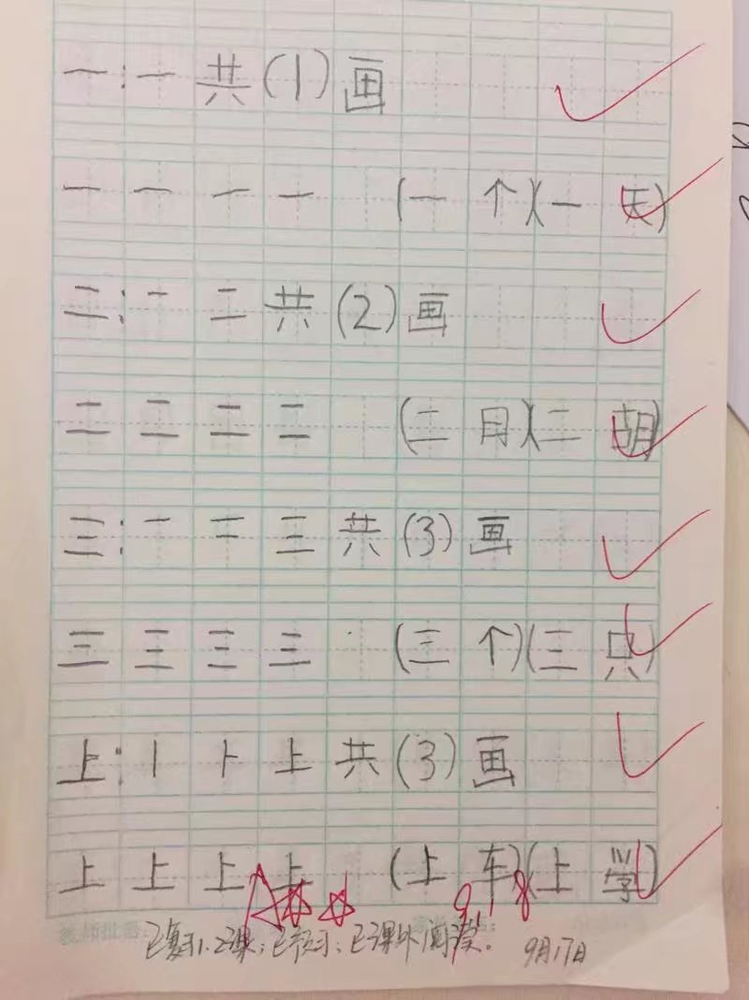
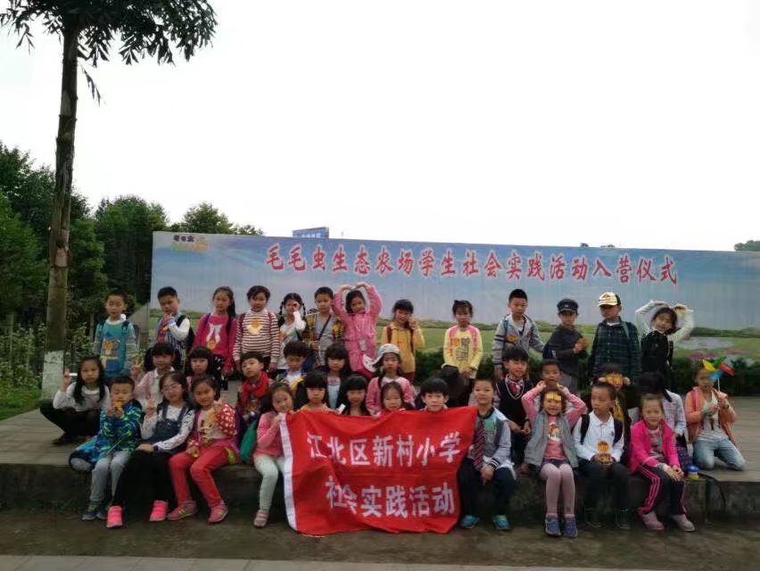
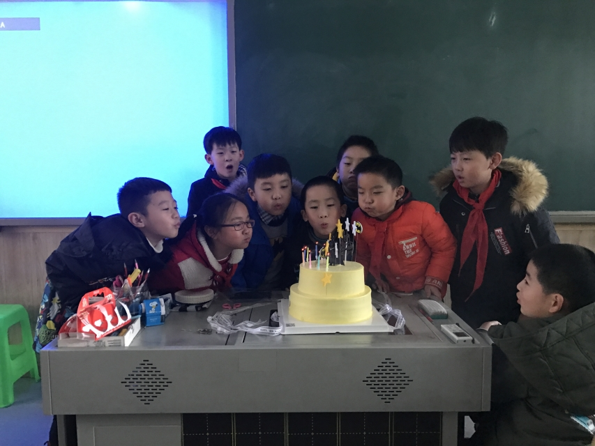

Grade One
Grade One，2016.9 - 2017.1，We became elementary school students.We were destined to meet.A delighted term.

My first homework.

We took part in the spring outing.
Grade Two
Grade Two，2017.9 - 2018.1，a harmonious term. We played happily.

We celebrate someone's birthday.
We went out for the parent-child acticity.
直升机


军用直升机用于执行军事任务的直升机。陆军航空兵的主要作战装备。在对地攻击、反坦克作战、支援地面部队作战和支援舰艇部队作战，以及提高部队机动性和后勤支援等方面具有重要作用。
运输机


军用运输机，使用性质分为战术运输机和战略运输机。代表机型：C-5M超级银河运输机、C-17运输机、安-124运输机、安-22运输机、伊尔-476运输机、运-20。军用战略运输机是一种用于空运兵员、武器装备和其他军用物资、并能空投伞兵和军用装备的军用飞机。军用战略运输机问世以来，在多次重大战争中都发挥了重要作用。现代战争重视高速、机动和深入敌后作战，运输机的发展越来越受到重视。战略运输机所代表的后勤保障力就是战斗力。有的还装有自卫的武器及电子干扰设备。
预警机
军用运输机，使用性质分为战术运输机和战略运输机。代表机型：C-5M超级银河运输机、C-17运输机、安-124运输机、安-22运输机、伊尔-476运输机、运-20。军用战略运输机是一种用于空运兵员、武器装备和其他军用物资、并能空投伞兵和军用装备的军用飞机。军用战略运输机问世以来，在多次重大战争中都发挥了重要作用。现代战争重视高速、机动和深入敌后作战，运输机的发展越来越受到重视。战略运输机所代表的后勤保障力就是战斗力。有的还装有自卫的武器及电子干扰设备。